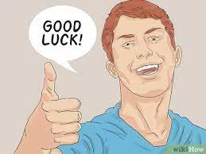

This is a power that would probably not show up on a usual basis. I mean, your character has the power, but that doesn't mean the people they use it on will never have any bad luck or always have good luck. The first time people don't get the outcome they think they deserve, your character will get funny looks.
